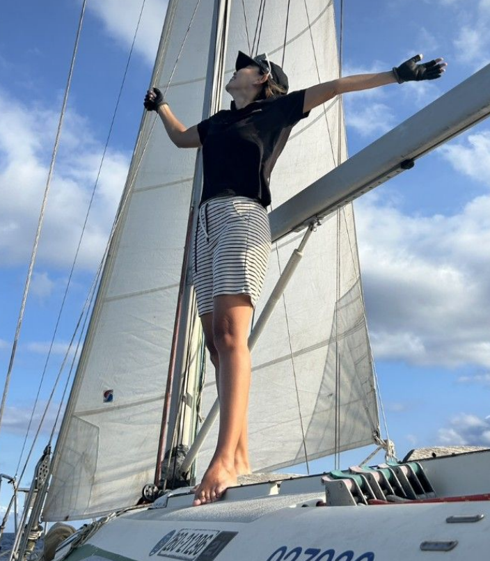
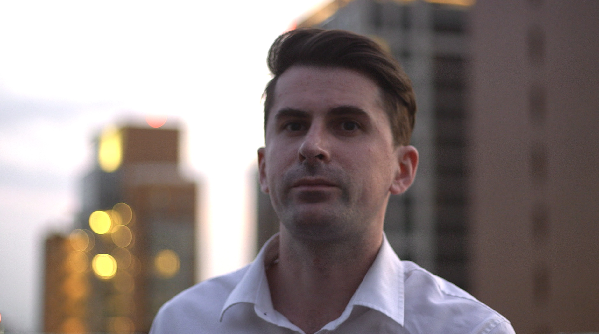

The People Behind the Work

Founder & Principal Consultant
Debby Wang is the founder and principal consultant of EG Communication Consulting, bringing deep expertise in global corporate communication and executive cross-cultural strategy to organizations operating across international markets.
[Add Debby's professional background here — career history, organizations worked with, and regions or markets where she has expertise.]
[Add her personal story or philosophy — what drives her approach to cross-cultural communication and what makes her methodology distinctive.]
[Add education, languages spoken, publications, speaking engagements, or other relevant credentials here.]

Business Development Project Manager
William Chilcoat serves as Business Development Project Manager at EG Communication Consulting, driving growth initiatives and managing client relationships across the firm's global portfolio.
[Add William's professional background here — career history, organizations worked with, and areas of business development expertise.]
[Add his personal story or philosophy — what draws him to cross-cultural business development and what he brings to client engagements.]
[Add education, languages spoken, certifications, or other relevant credentials here.]